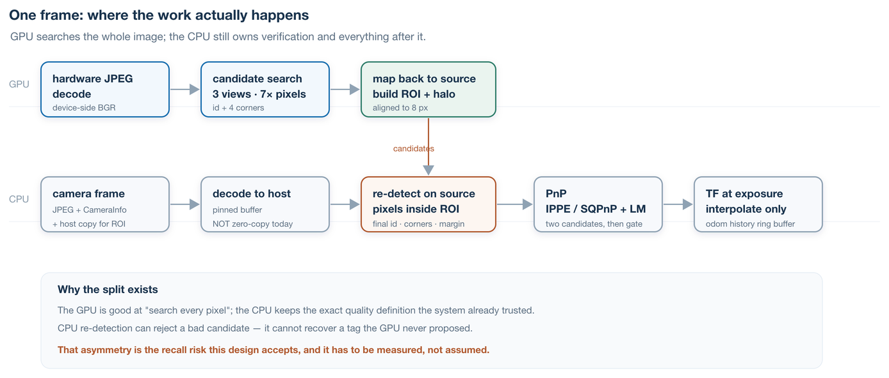
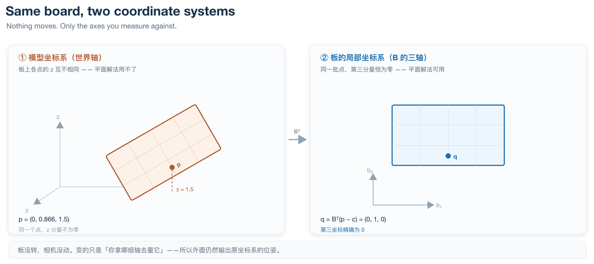

NOTE 26 / 感知 · 定位链路
AprilTag 的 GPU 加速实施方案
把检测放上 GPU 之后，CPU 省了一半，延迟只降一成。这个差值本身就是这篇文章要讲的东西。
这是对一个 AprilTag 定位模块的整理：整条链路做什么、CUDA 到底改了哪一段、C++ 重构又改了什么、位姿怎么解，以及怎么证明它真的变好了。
说明。文中的性能数字都标明版本与配置，是历史测量，不代表当前现场状态。示例数字如果只用于解释机制，会单独标注。源码路径已改写成描述性说法。
1. 这条链路在解什么
它不是「识别到哪个码」就完事。输入的已知信息有三类：
| 已知 | 用来做什么 |
|---|---|
| 相机内参与畸变 | 描述三维点如何投成像素 |
| Tag 尺寸与安装几何 | 把码的角点对应到物体的三维模型 |
| 外参、TF、里程计 | 把相机坐标下的结果换算到别的坐标系 |
输出是工装板、料盘相对相机与机器人的位姿。中间还要穿过滤波、关联、有效期检查这些环节——它们不产生位姿，但决定位姿能不能用。
2. 开销从哪来
把 CPU 的工作拆开，大概是五项之和：
全图检测要在几百万像素里找边界、拟合四边形、解码字——而真正有用的 Tag 往往只占很小一块。这部分天然适合并行硬件。
但检测之外的东西不会因为接了 CUDA 就消失：消息反序列化、对象分配、矩阵运算、TF 与里程计查询、状态缓存、发布转发。
还有一个容易被误解的前提：原来的 Python 版本已经在调原生 AprilTag 和 OpenCV 了，并不是用 Python 循环算图像。所以 C++ 重构压的不是「Python 慢」，而是原生算法之间以及周边的热路径。
3. 分工：GPU 提候选，CPU 做复核

现在的 GPU 后端不是拿 GPU 结果直接当答案，而是：
整张图交给 GPU 提出候选（ID + 四个角点）→ 映回原图坐标 → 围绕候选切 ROI → CPU 在原始像素上重新检测 → 得到最终的 ID、角点、hamming、margin。
这里有个不对称，值得单独说：CPU 复核能剔除坏候选，但补不回 GPU 完全没提出的候选。所以这套架构天然接受一个召回风险，而这个风险必须实测，不能假设。
三个视图，七倍像素
会话里同时建了三个视图：原图 W×H、纵向拉伸 W×2H、整体放大 2W×2H。它们来自同一张照片，不是三个相机。
缩放不会创造细节，但会改变检测器看到的离散像素结构——某些小码、斜视码在某个视图下更容易成为候选。代价是三个视图加起来是 7 倍像素（1 + 2 + 4），这一项直接进 GPU 墙钟。
候选映回原图时用像素中心约定：
最终角点一定来自原图复核，不拿放大图的角点配原相机内参去做 PnP——否则等于给像素注入了虚假精度。
ROI 为什么要留 halo
裁 ROI 时会在候选外扩一圈边界。原因是 CPU 检测器需要完整的码边界和周围背景，裁得太紧就重新识别不出来。
代码里还会按 8 像素对齐、合并重叠区域、限制单区域与累计像素数、对重复检测去重。halo 越大上下文越充分，CPU 要扫的像素也越多——区域宽高同时涨，面积开销不是线性的。所以 halo=32 的性能不能直接套到 halo=128。
4. 质量契约：margin 不是概率
接受一个检测要过一组条件：零纠错、margin、重投影、距离、时效。GPU 说「我看到了某个 ID」并不自动满足这些。
margin 的计算方式是这样的：在码边界上分别拟合局部的白电平与黑电平，取两者的中点作为阈值，再看每个码元的亮度离这个阈值有多远，黑白两侧分别累计后取较小的那个平均值。
直观例子：白 220、黑 40，阈值 130。亮度 210 离阈值 80，判白很明确；亮度 135 只离阈值 5，一点噪声就能翻。
margin 到底是什么
拖动白色电平、黑色电平和码元亮度，看阈值和余量怎么变。注意：码元亮度只要在阈值一侧，ID 照样能读对，但 margin 可以接近零。
- margin
- —
- 判定
- —
—
所以 margin 衡量的是「黑白判别离边界多远」，不是正确概率，也不是毫米定位误差。
而 hamming=0 是另一件事：读出的码字不用纠错就匹配合法码。它说明码字结构对，不说明每个码元都远离判定边界。这两项检查不能互相替代——一个码可以 hamming 完美而 margin 勉强。
GPU 的候选结构里只有 ID、角点和视图编号，没有等价的 margin。这也是为什么最终要回原图用 CPU 重算：只有那样，质量值才和原来那套判据可比。
5. 「零拷贝」这个词被用坏了
现在的 JPEG 路径是：硬件解码 → 设备端 BGR → 拷回主机固定缓冲 → 再拷到输出缓冲 → 图像 clone 等处理 → 需要时再传回 GPU 检测。
CPU 复核需要原始像素，所以主机图像必须留着。这条路径里存在显式的双向传输和主机侧复制，不能叫全程零拷贝。
谈零拷贝必须先限定范围：同进程、跨进程，还是 CPU/GPU 之间。共享指针复制通常只传句柄；容器深拷贝才复制内容。而解码产生新像素属于必要的数据转换，不是冗余复制——把它算进「拷贝」只会让讨论失去意义。
即便 CPU 与 GPU 共享物理内存，API 路径、映射方式和缓冲管理仍然决定有没有发生复制。而且零拷贝必须同时保证生命周期与同步：下游没读完，上游不能覆盖缓冲。
会话常驻解决的是另一个问题：逐帧创建检测器、申请显存、建 stream 会产生重复初始化成本。所以会话保留 stream、显存、三个检测器和有界结果缓冲，JPEG 解码器也复用容量足够的缓冲。
6. GPU 之后还剩什么
检测迁到 GPU 后，消息、状态和坐标处理在剩余 CPU 消耗里的占比反而变大——因为分母小了。
C++ 重构覆盖的是相机桥接、感知、物体处理、聚合、只读转发这一整条，而不只是一个 PnP 函数。主要机制：原生类型、减少对象创建与转换、用 OpenCV/Eigen、消除解释器运行时成本、共享消息指针、有界容器、资源复用。
举个具体的：帧结构里保存的是消息的共享指针，接收时不必立刻深拷贝整张图。
队列必须有界。每 100 ms 来一帧而处理要 150 ms，无限排队只会让结果越来越旧。现在用的是订阅只留最新一帧、有界深度、待处理帧替换、输出时效检查，以及用 generation 隔离旧任务的结果。
这里要澄清一个常见误读：depth=2 不代表两帧在 GPU 上并行算，它只是有界流水线的容量。
还有一个必须分清的点：ROS 消息的 decode 和 JPEG 的 decode 完全不是一回事。前者是「字节 → C++ 消息对象」，后者是「压缩字节 → 像素」。CompressedImage 反序列化之后，里面的 data 仍然可能是 JPEG，还没解压。
7. 位姿数学：从 SVD 到 IPPE / SQPnP
统一约定 T 是物体到相机的刚体变换：
已知三维点、对应像素和内参，反求 R、t，就是 PnP。求解前先做一个准备工作：把模型点集做奇异值分解，判断它到底是直线、平面还是三维分布。
奇异值分解在算什么
SVD 把任意 N×3 矩阵拆成三个矩阵的乘积：
奇异值本身描述点集的形状，不描述它相对坐标轴的摆放——整块板旋转之后，奇异值不变。
为什么特征向量就是主方向
取一个单位方向 v，把所有点投影到这个方向上，投影长度的平方和是：
而 XTX 与 SVD 的关系是直接的：
换个说法：找主方向，就是找「投影后最散」的那个方向；而它恰好是 XTX 的特征向量。
一个算得出来的例子
矩形的四个角 (−2,−1)、(−2,1)、(2,1)、(2,−1)，中心化后按行堆成：
三个奇异值直接把形状说完了：
| 奇异值形态 | 几何形状 | 含义 |
|---|---|---|
| 只有第一个明显非零 | 直线 | 退化，解不出来 |
| 前两个非零，第三个近零 | 平面 | 可以走平面专用解法 |
| 三个都明显非零 | 三维分布 | 走通用解法 |
平面情况下的第三主方向就是法向。正方形的前两个奇异值可能相等，此时平面内主轴不唯一——但这不影响平面判定，也不影响坐标变换的有效性。
正交基、行列式与右手系
正交矩阵满足 BTB = I，轴互相垂直且长度为 1，但行列式可以是 +1 或 −1。要判断它是不是纯旋转，看：
轴的正负方向本身不唯一——v 和 −v 都是有效主方向，所以三个方向不保证自动组成右手系。代码的修正是翻转第三轴：
摆平：换一套坐标轴，不改数据
「摆平」这个词容易读成「把板压平」。它不是。板、相机、照片都没有移动——变的是你拿哪一组轴去量它。
问题出在这里：平面专用解法（IPPE）要求点的第三坐标恒为零。但模型点是在机器人坐标系里描述的，板一旦倾斜，z 就不再是常数，平面解法直接用不了。
解法是给板建一个自己的坐标系：前两轴沿板面、第三轴沿法向，然后把点重新表达一遍。
先约定四个记号，它们的量纲不同，别混：
| 记号 | 是什么 | 维度 |
|---|---|---|
| c | 板中心在模型坐标系里的位置 | 三维点 |
| b1、b2 | 板面内的两个单位方向（横、纵） | 三维方向，长度 1 |
| α、β | 某个点沿这两个方向走了多远 | 标量，单位米 |
于是板上任意一点写作「板心 + 横着走 α + 纵着走 β」。α、β 是这块板自己的平面坐标，b1、b2 是这两个坐标轴朝哪指。

举个具体的：中心 c = (0,0,1)，板绕 X 轴倾斜 30°。
这三个基向量不是凭空给的，它们就是板自己的三个轴，在模型坐标系里指向哪。板本来是平放的（板面 = XY，法向 = Z），把整块板绕 X 转 30°，三个轴跟着转，于是取绕 X 旋转矩阵的三列：
两个容易卡住的地方：
b1 为什么一点没变？因为它本身就是旋转轴。绕 X 轴转，X 轴上的向量当然不动。
b3 为什么是 −sin 而不是 +sin？右手定则：绕 +X 正向转，Y 转向 Z。所以 Y 轴变成 (0, cosθ, +sinθ)，而 Z 轴往 −Y 偏，变成 (0, −sinθ, cosθ)。两个符号相反，恰好保证正交。
验一下这个基对不对——板上那个点应该垂直于法向：
不想信公式的话，把 (α,β) = (0,1) 代进去手算一遍：
在新坐标下 PnP 求得 pcam = Rq q + tq，代回去就还原成原物体坐标系：
IPPE：把平面结构用尽
平面点的第三坐标为零（也就是 q3 = 0），把它代进投影式，旋转矩阵按列拆开：
所以板平面到去畸变图像之间存在一个单应关系：
IPPE 不是简单地把 H 分解掉，而是用平面映射在参考点附近的局部变化率（雅可比）来恢复旋转候选：
它显式给出两个候选。板远、小、投影接近仿射时，两种倾斜姿态的投影可能非常接近，光看误差分不出来，需要额外先验。这两个候选都是合法旋转——和一个正常矩阵加一个 det = −1 的反射完全是两回事。
SQPnP：带旋转约束的二次优化
从归一化图像坐标出发，x = X/Z、y = Y/Z，移项得两条线性约束：
消去平移后，目标函数可以写成九维旋转向量 r 的二次型：
注意「全局最优」的适用范围：代数残差 X − xZ 等于 Z(X/Z − x)，它不等于直接最小化像素重投影误差，所以不保证真实物理精度。这也是代码在它之后还要继续做 LM 精化和像素门验收的原因。
8. 曝光时刻
照片对应的是曝光那一刻，不能无条件用「现在最新」的机器人位姿去转换它。
算一下就知道了：机器人以 0.2 m/s 移动，200 ms 的时差就是约 4 cm 的平移误差。
做法是保存里程计历史（有界环形缓冲，约 500 条）：能精确匹配就直取；夹在两条样本之间且在允许间隔内就插值；没有包围样本就等待，拒绝外推。
平移线性插值，旋转走相对旋转与旋转向量。重构时特意保留了原实现在零角度、接近 π 时的分支语义——看起来等价的重写，在这里可能改变结果。
这是内部查询曝光时刻的变换，不改写也不重新估计上游的里程计。过期的输出仍然按原有效期检查，不能用「重新发布」把旧观测刷新成新的。
9. 怎么证明它变好了
先破一个直觉：CPU 更省不等于延迟更低。
假设 CPU 方案每帧用 50 ms CPU、55 ms 完成；GPU 混合方案每帧只用 15 ms CPU，但要 90 ms 才完成。10 Hz 下 CPU 从 0.5 核降到 0.15 核，可结果更晚了。这只是个说明用的例子，但方向是真实的。
GPU 的墙钟时间包含上传、设备计算与竞争、同步、CPU 复核和后处理；结果年龄还要加上相机与进入算法前的排队。
这不是假设——早期整链测试真的出现过。第一版接 CUDA 后，CPU 下降约 10%–17%，但观察端年龄 P95 从约 209 ms 涨到 417 ms，并出现超时。所以后来那些收益，不是「一接 GPU 就有」的。
ABBA 是一种实验顺序
ABBA 不是缩写，是 A→B→B→A 的平衡顺序。A 可以是 Python，B 是 C++，每轮用同一份录包，频率、参数、预热、资源环境都锁住。
A 在第 1、4 次，B 在第 2、3 次，平均位置相同，能抵消近似线性漂移。它消不掉突发负载、冷启动和缓存残留——所以异常测试要单独做：乱序、过期、断流、坏消息、TF/odom 配对、恢复。
还有一条容易搞错的：要比较 Python CPU 对 C++ CPU、Python GPU 对 C++ GPU，不能把 CPU/GPU 本身的召回差异算成重构的差异。
同条件下的实测收益
范围是六个热路径进程（桥接、感知、工装板、料盘、聚合、只读转发），原有 C++ 框架不计入。GPU 回放用 halo=32、depth=1，Python 与 C++ 同后端、线程限制一致。
| 后端 / 指标 | Python | C++ | 变化 |
|---|---|---|---|
| CPU：平均 CPU | 0.887 核 | 0.629 核 | −29% |
| CPU：峰值 RSS 合计 | 512 MB | 309 MB | −40% |
| CPU：capture-to-publish P95 | 339 ms | 292 ms | −14% |
| GPU+JPEG：平均 CPU | 0.530 核 | 0.239 核 | −55% |
| GPU+JPEG：峰值 RSS 合计 | 734 MB | 561 MB | −23% |
| GPU+JPEG：capture-to-publish P95 | 309 ms | 278 ms | −10% |
两个读法上的坑：0.239 核表示平均每秒消耗约 0.239 CPU 秒，不是整机利用率 23.9%；RSS 合计会重复计算共享页，不等于 PSS，也不等于整机实际占用。
最值得看的是最后两组的对比：GPU 模式 CPU 下降超过一半，P95 只降一成。这个差值正好说明 CPU 工作和总等待时间是两件事。而且收益用的是同一套 GPU 内核库，不能说成「C++ 加速了 GPU 内核」。
正确性那边是另一条腿：同后端下 4,446 帧逐帧差分，角点与 margin 的最大差为 0。
10. 三处我会追问的地方
这节的判断是我自己的，不是原文的结论。
一、平面判定的阈值是绝对量，和点集尺度耦合。代码用「第三奇异值小于 1e-9」判定共面，但奇异值正比于点集尺寸——0.2 m 的板、若干点，σ₁ 大概是 0.2√N 量级。如果模型来自 CAD 导出，z 上带 0.1 mm 噪声，σ₃ 约 1e-4√N，比 1e-9 大五个数量级，平面判定会失败，IPPE 分支会悄悄退回 SQPnP。阈值对「精确共面」余量巨大，对「几乎共面」零余量。改成相对量（σ₃/σ₁ 或除以 √N）成本是零。
二、三个视图的代价没有量化。1 + 2 + 4 = 7 倍像素，这是进 GPU 墙钟的实打实开销，也可能是早期延迟回归的因素之一。原文只说了「会增加计算量」。
三、自己指出的召回风险，没有数据。原文准确写了「CPU 复核补不回 GPU 没提出的候选」，但没给召回对比。补一张表就够了：GPU 提出且 CPU 接受 / 仅 CPU 提出 / 仅 GPU 提出。「仅 CPU 提出」那一列如果是 0，这套架构就是安全的；如果是 3%，每次漏检都值得复盘。
11. 收尾
这条链最值得记住的不是哪个数字，而是一种分工方式：GPU 负责「找」，CPU 负责「判」。
找是并行问题，判是契约问题。把这两件事分开，你才能在加速的同时保住原来那套质量定义——否则你加速出来的东西，和原来那套判据根本不可比。
而证明它变好，需要两条腿：性能用平衡顺序测，正确性用逐帧差分测。而这两件事，恰好是最容易被「我已经优化完了」这句话跳过的。
相关笔记：AprilTag 视觉定位详解（标签怎么变成位姿） · 相机标定：四个参数各管什么（内参错了会怎样） · CUDA 与算子（并行与访存的基础） · 代价地图